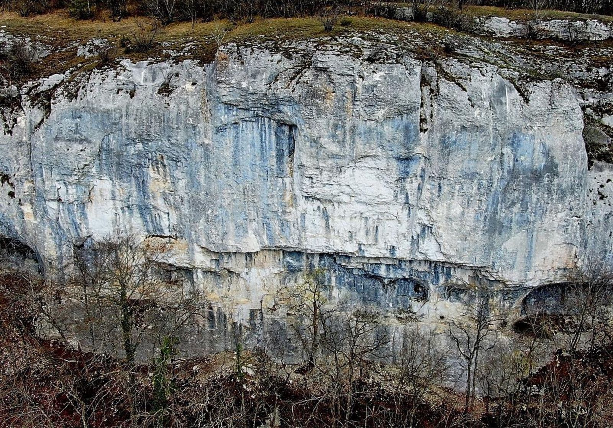

Droit d'hauteur

1 2 3 4 4b 5 6 7 8 9 10 11 12 12' 12'' 13 14 15 16 17 18 19 20 21 22 22bis 23 24 25 25bis 26 26bis 27 28 29- Relais chaîné
- Grande voie
Touchez une voie pour voir ses infos, appui long pour la retrouver dans la liste.
-
1
Si maman si
5cOn navigue en empruntant de belles portions de caillou. Magnifique balade dans un niveau abordable... Equipement rassurant même si le premier point, d’accès aisé, est un peu haut ! En janvier 2018, France rejoignait l’étoile du Berger.
Jean-Yves Salin (janvier 2018)
-
2
L’étoile filante
6cDépart par « Si maman si », puis tout droit dans le dévers.
Jean-Yves Salin (août 2022)
-
3
Evidement
7a+Départ par « Si maman si » puis légère traversée à droite pour rentrer dans un pan déversant qui permet de rejoindre un joli dièdre. Sortie aérienne sur un pilier (avril 2018). On peut aussi partir par « Regarde les baleines… » : même difficulté, mais plus homogène.
Jean-Yves Salin (août 2022)
-
4
Regarde les baleines passer
7bUn crux physique au milieu, une fin superbe !
Jean-Yves Salin (août 2018)
-
4b
Baleines directe
7cMur déversant, beau rocher ! Accessible aussi depuis 5.
Jean-Yves Salin (août 2022)
-
5
Passage à tabac
7b+Un départ à doigt, suivi d’un mur de plus en plus déversant. On termine en remontant à droite un dièdre plus facile qui mène à une sortie physique. Non représenté : Une connexion existe entre le socle de cette voie et la voie 6 : 7b+
René Hopf, Jean-Yves Salin
-
6
Tatoo compris
7b/7b+Socle à doigt qui partage qq prises avec « Voyage organisé » puis mur blanc déversant super classe avec un crux en traversée à gauche pour rejoindre le dièdre. Sortie aérienne magnifique.
Jean-Yves Salin
-
7
Voyage organisé
7b+Splendide pilier déversant suivi de deux passages bloc. A faire ! On peut sortir par « Droit d’hauteur » en traversant à droite avant le dernier pas de bloc (un point)…
Gilles Déschamps
-
8
Droit d’hauteur
7bMagnifique longueur ponctuée de passages blocs alternant avec de bons repos. Il faut rester bien lucide dans le crépi final !
Gilles Déschamps
-
9
Dalle masquée
7bDépart commun avec 7. Passage physique très intéressant au début du mur. On rejoint ensuite la fin de « Lover dose ».
Réné Hopf, J.B. Cappicot
-
10
Lover dose
L1 6bL2 6c+Départ commun avec la 7. Rétabli sur la vire, aller tout à droite puis remonter une belle écaille physique. Dans la seconde longueure vous trouverez un très beau mur sclupté, où il faut traverser à gauche…au bon moment !
Jean-Yves Salin
-
11
DGI
?Dalle non équipé
Luc Pillet
-
12
Fromage de chef
7b+Une première partie physique, une fin très technique, une voie magnifique !
René Hopf, J.B. Cappicot, Jean-Yves Salin
-
12'
Fromage de chef'
7aOn s'arrête au premier relais de « Lover dose ».
René Hopf, J.B. Cappicot, Jean-Yves Salin
-
12''
Fromage lover
7aOn commence dans Fromage de Chef et on termine dans Lover dose. Bifurquer au relais intermédiaire de Lover dose, Majeur !
René Hopf, J.B. Cappicot, Jean-Yves Salin
-
13
Rectiligne
7cAprès le toit physique, on monte tout droit dans un mur raide parsemé de mouvements assez complexes et on rejoint le relais de « Fromage de chef » .
Jean-Yves Salin (avril 2018)
-
14
Naze du bal
7b+Après un départ bloc ultra technique puis un toit que l’on franchit par la gauche, on rentre dans une dalle compacte continue !
Gilles Déschamps, Jean-Yves Salin
-
15
Le hasard et la nécessité
7c/7c+Le toit est bien bourrin. Le mur qui suit se complique sérieusement jusqu’en haut… Voie classieuse !
Jean-Yves Salin (avril 2018)
-
16
Les dessous chics
7b+/7cUn beau mur qui se termine par un pas délicat sous le dévers final.
Gilles Déschamps, Jean-Yves Salin
-
17
Fin vert
7b+Escalade variée, de beaux passages, rocher très chouette.
Gilles Déschamps
-
18
Merci patron
7b+/7cBelle variété de mouvements, avec un final où il ne faut pas mollir...
Jean-Yves Salin
-
19
La nuit promet d’être belle
8a/8a+Des sections très physiques alternent avec des portions (un peu) moins dures… Un beau chalenge, un must dans la difficulté, et un bel hommage au grand Jacques Higelin…
Jean-Yves Salin(avril 2018)
-
20
Manu militari
8bAprès le toit de « La nuit… », on part à droite dans un mur de plus en plus raide… et dur !
Jean-Yves Salin(mars 2024)
-
21
La bataille de Corgengoux
8bUn toit, un mur blanc déversant, et une section bloc sur petits trous tout en haut. Dur, sans aucun doute ! Le nom est une « référence locale » à la Bataille d’Azincourt, qui, en 1989, était devenu le nom du 1er 8c de France…
Jean-Yves Salin
-
22
Potentiel d’action
8a+Première partie soutenue après le passage physique du toit (8a). Deuxième partie très dure sur inversées et arquées (8a). L’intégrale mérite 8a+. Variante : après le toit et le « repos », on peut rejoindre « Fausse alerte », 8c ?
Jean-Yves Salin
-
22bis
Projet : « Burning love »
8Equipement en cours (sept 2025). Après le toit et le « repos » de 22, on rejoint « Fausse alerte » (23) sur deux points puis on part à droite dans un bombé très difficile. De là, soit on sort tout droit (8?), soit on repart (si on est joueur !) dans « Fausse Alerte » (9?)
Jean-Yves Salin
-
23
Fausse alerte
8cUne voie très exigeante, demandant force et continuité. Le mur déversant après le toit se complique jusqu’en haut…où se trouve un crux redoutable et magistral ! Première par Nico Pelorson le 30 mars 2025, indécotable !
Jean-Yves Salin (février 2018)
-
24
Le passage se crée
7cBelle voie d’ampleur, complète sur le plan gestuel : toit, dièdre, dalle finale délicate à souhait...
Jean-Yves Salin
-
25
La pipistrelle dormeuse
8aAprès un socle aisé, on franchit une succession de petits toits (qui finalement en font un grand !) avant de rentrer, à droite, dans une dalle bien raide. Si on part à gauche (24 bis), la dalle est nettement plus dure…
Luc Pillet
-
25bis
Variante de La pipistrelle dormeuse
?Départ à gauche de « La pipistrelle dormeuse » (« 24 bis » dans la description de la voie 25) : la dalle est nettement plus dure.
Inconnu
-
26
SGI
7bQuelques mètres difficiles dans le socle.
Luc Pillet
-
26bis
SGI v2
?Non équipé.
Luc Pillet
-
27
Les francs maçons
7b/7b+Voie grandiose malgré de vilaines prises taillées dans le dévers : le mur après le toit (crux pour traverser à gauche) est dément !!!
J.B. Cappicot
-
28
Deux pas dans le soleil
7b+Même départ que la voie précédente puis on tire à droite toute à la sortie du toit et on remonte le mur: de beaux passages assez bloc dans du rocher de qualité, entrecoupés de bons repos. Final physique exigeant…
Luc Pillet, J.B. Cappicot
-
29
Projet
?Non équipé.
Luc Pillet